Queremos escala transcriptómica: al menos cientos e idealmente miles de genes, resolución single-cell y contexto de tejido.
MERFISH (Multiplexed Error-Robust FISH) lo resuelve codificando cada mRNA de un gen distinto con un Código de barras binario que se detecta a lo largo de rondas secuenciales de microscopía.
Sistema comercial: Vizgen Merscope
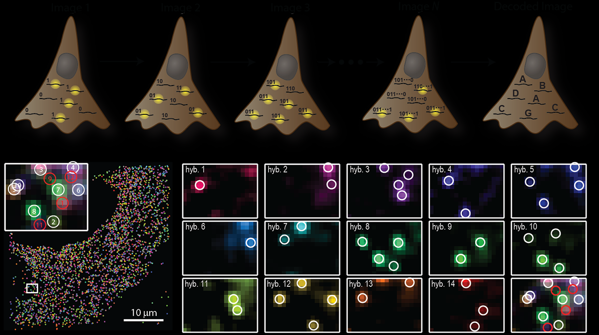
El concepto detrás de MERFISH
La idea es genial:
Marcar cada especie de RNA sondas que codifican en conjunto una secuencia binaria
Hacer N rondas de hibridación con sondas fluorescentes
En cada ronda, algunos RNAs se detectan (bit = 1), algunos no (bit = 0)
A lo largo de las rondas, el patrón es el código de barras que identifica al gene
Con 16 bits (8 rondas × 2 canales), teóricamente se podrían codificar miles de códigos de barras únicos. ¿Cuántos?
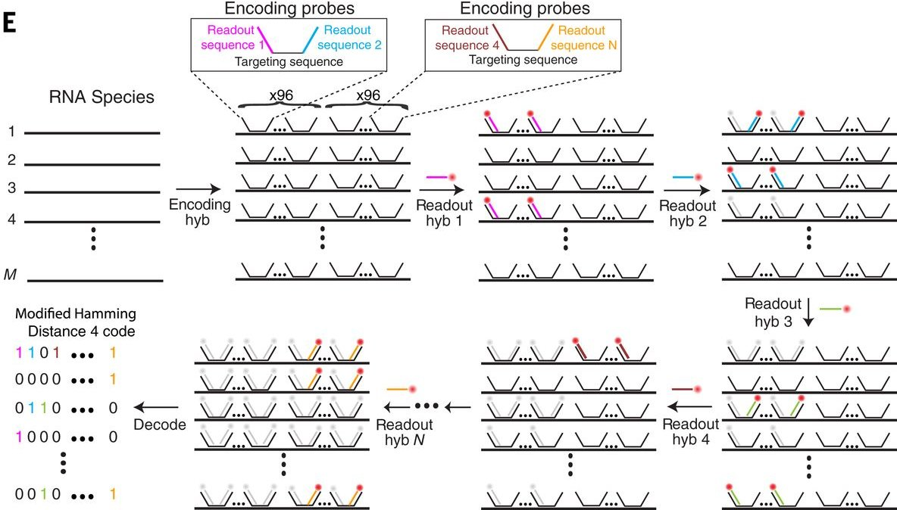
. . .
2^16 = 65,536
Códigos de barra robustos a errores
No se utilizan todos los posibles códigos binarios. Si se deja una distancia Hamming mínima de 4(MHD4):
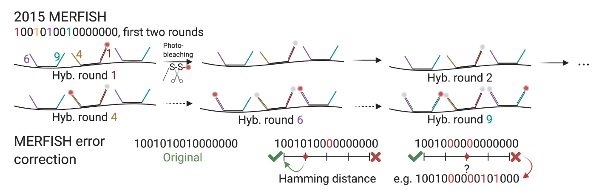
Errores de 1 bit pueden corregirse.
Errores de 2 bits pueden detectarse y eliminarse.
Es crucial por el ruido intrínseco de las imágenes de microscopía fluorescente: spots no detectados, hibridación no específica de las sondas, fotoblanqueo, pueden introducir bits erróneos.
Datos de hoy: Vizgen MERFISH
Adaptación del tutorial del paquete starfish en python (SpaceTx consortium):
Células U-2 OS (human osteosarcoma cell line)
~100 genes codificados por 16-bit MHD4
8 rondas de hibridación × 2 canales = 16 imágenes
Cada imagen: 2048 × 2048 pixeles, plano-z único
Plus: imagen de núcleos marcados con DAPI, libro de códigos (codebook), factores de escala
Utilizaremos un grupo de datos reales de Merfish. Los pasos a seguir son
Preprocesar imágenes en FIJI (filtrado y deconvolución)
Decodificar cada pixel de acuerdo al barcode y asignarlo a un gen en R
Comparar los resultados con un benchmark.csv
Son datos de “juguete”. La idea es que no haya cajas negras.
Las plataformas comerciales hacen este pre-procesamiento, pero no es posible saber en el futuro si serán las mismas. Mejor aprender conceptos. Saber las limitaciones del pipeline.
Vista general del pre-procesamiento
Las imágenes crudas tienen ruido y fluorescencia de fondo (background).
Pipeline (en FIJI):
Paso
Método
Propósito
1. Filtro High-pass
Gaussian, σ=3
Quitar fondo de baja frecuencia
2. Deconvolución
Richardson-Lucy/Unsharp mask
Definir los puntos fluorescentes
3. Filtro Low-pass
Gaussian, σ=1
Suavizar el ruido nivel pixel (usualmente del detector)
Primer filtro Gaussian high pass
Mantiene señal de alta frecuencia (púntitos) y quita señal de baja frecuencia (background, autofluorescencia)
High-passed = Original − GaussianBlur(Original, σ=3)
. . .
Tip
Abriremos el hyperstack en FIJI and experiment with different σ values (1, 3, 10). Mayor σ = más agresivo la remoción de background.
Los datos crudos
1. Identifica ruta a tus imágenes
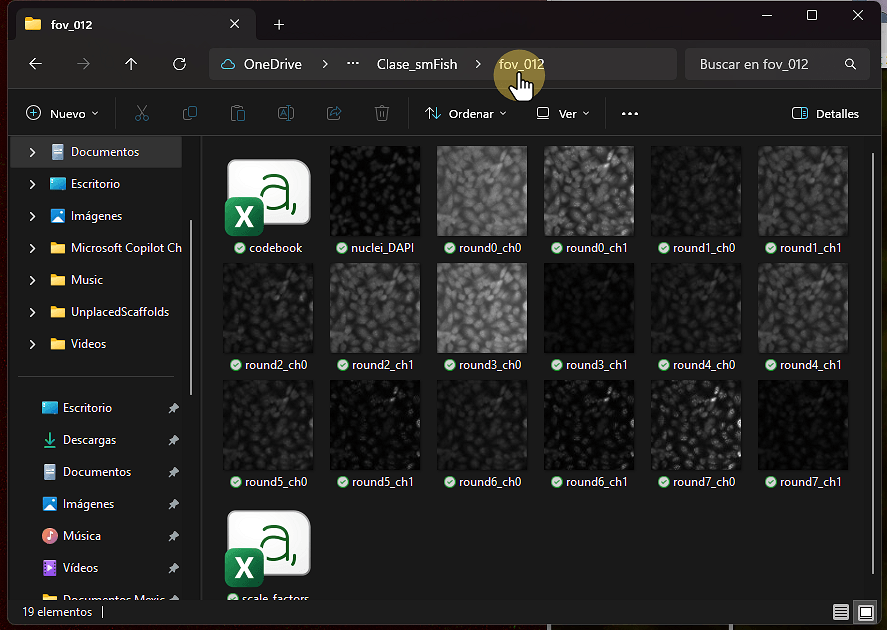
Identifica ruta a tus imágenes
2. import image sequence
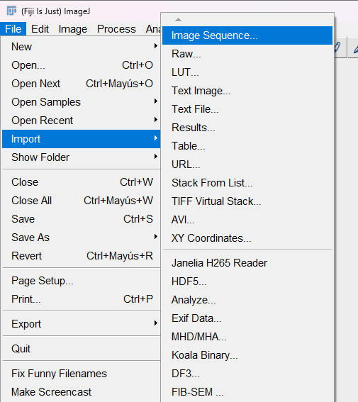
import image sequence
3.Browse al directorio con las imagenes
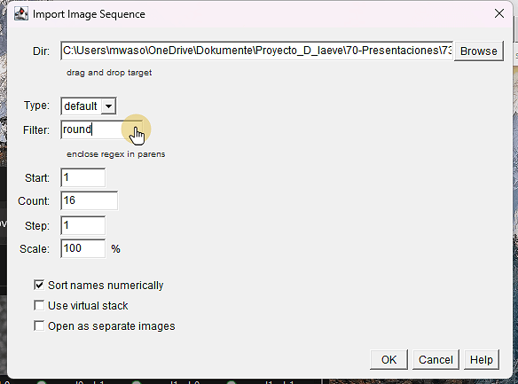
Escribe “round” en el campo Filter:
. . .
Tip
ℹ️ Escribimos “round” para que solo abra las imagenes (count debe cambiar a 16)
4. stack to hyperstack
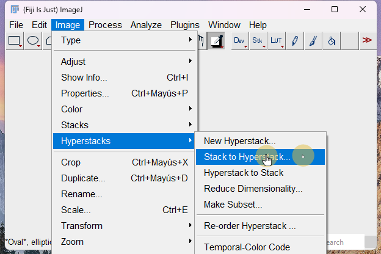
stack to hyperstack
5. 2 canales y 8 ronda
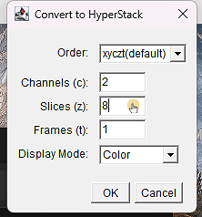
. . .
Tip
ℹ️ También cambia el modo de “Color” a “Composite”
6. Selecciona el stack
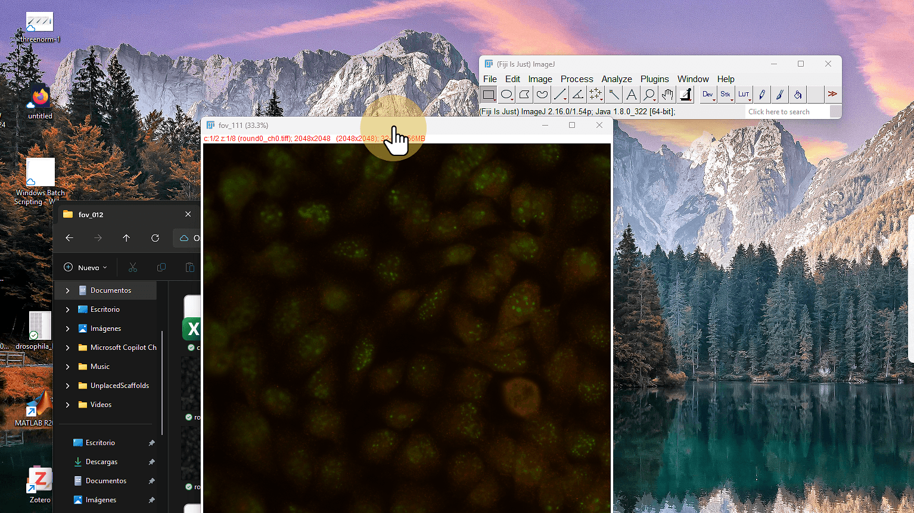
Selecciona el stack
7. duplicate
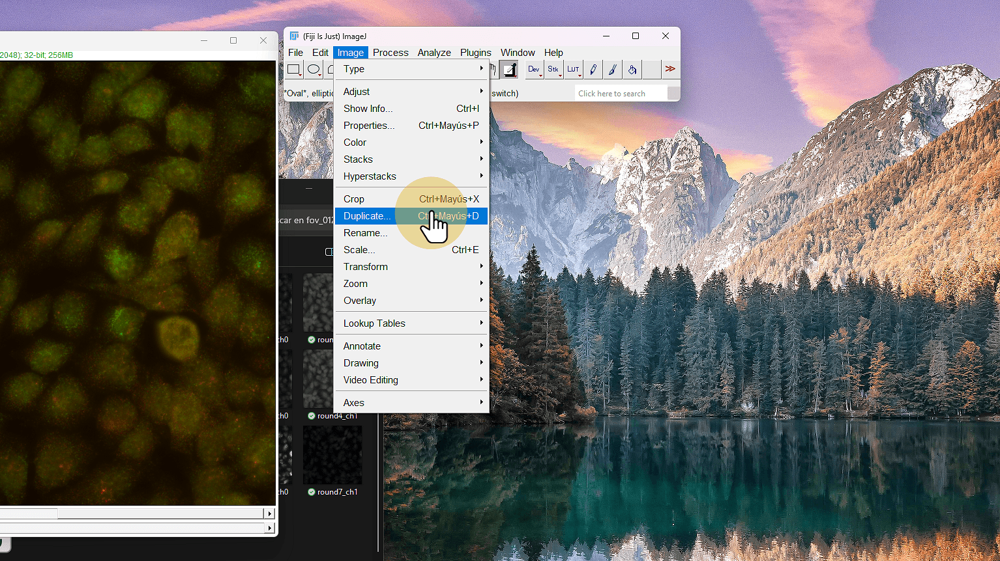
duplicate
8. Cambia nombre a gauss3
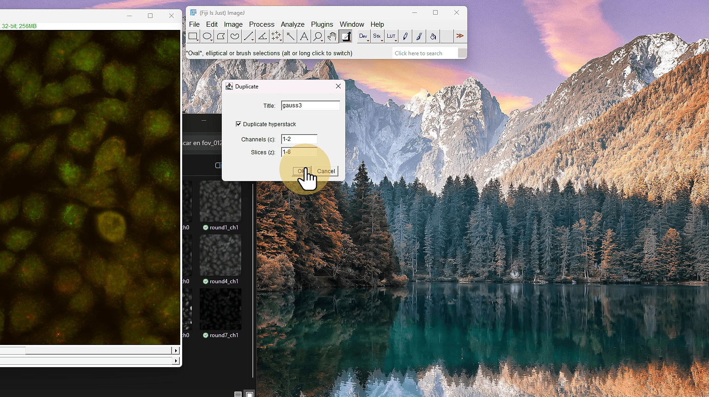
Cambia nombre a gauss3
9. selecciona la nueva copia
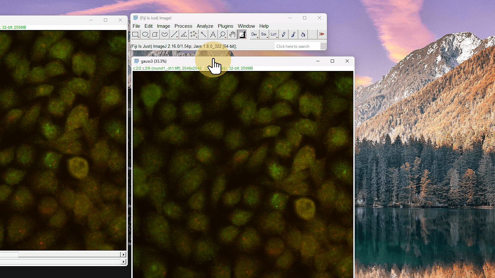
selecciona la nueva copia
10. Click en Blur Gaussiano
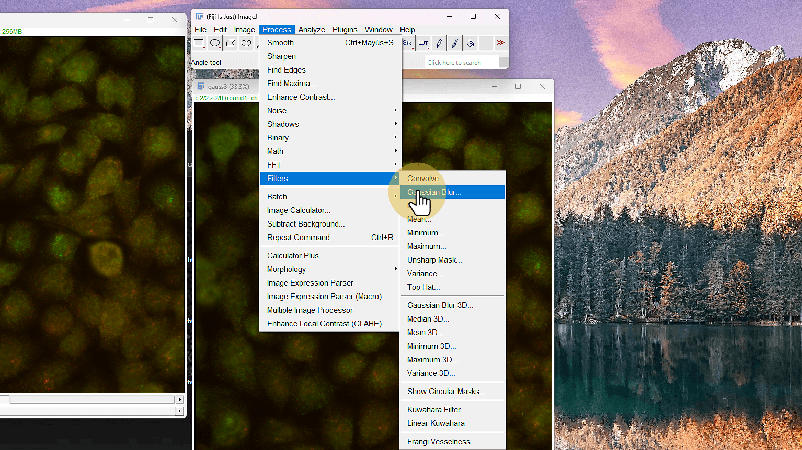
Click en Blur Gaussiano
11. Sigma 3
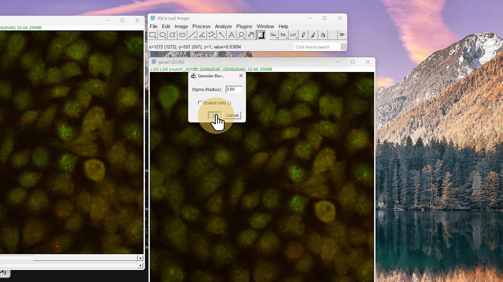
Sigma 3
ℹ️ NO scaled units. Puedes experimentar con 5..10
12. Selecciona Image Calculator
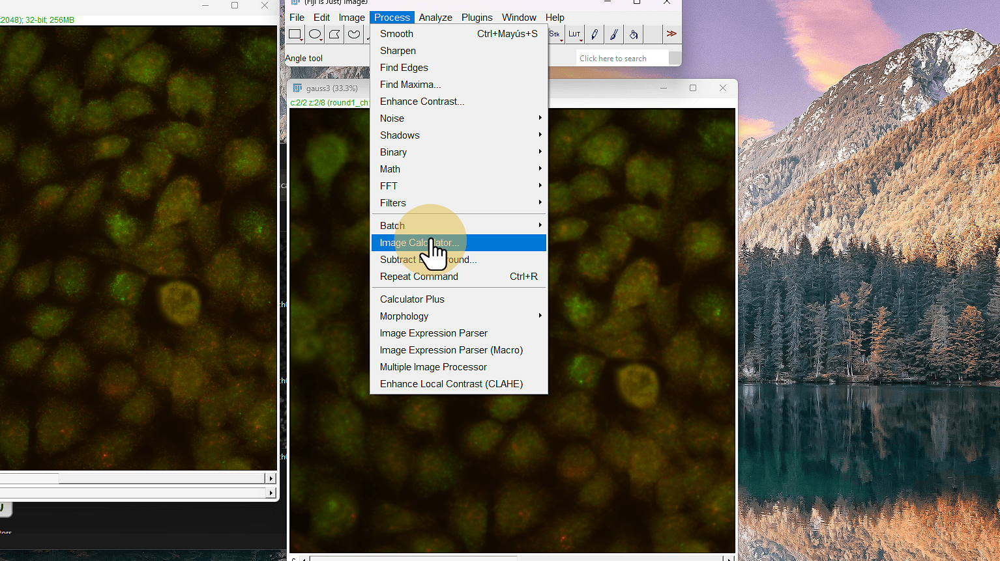
Image Calculator
13. Resta el blur a la original
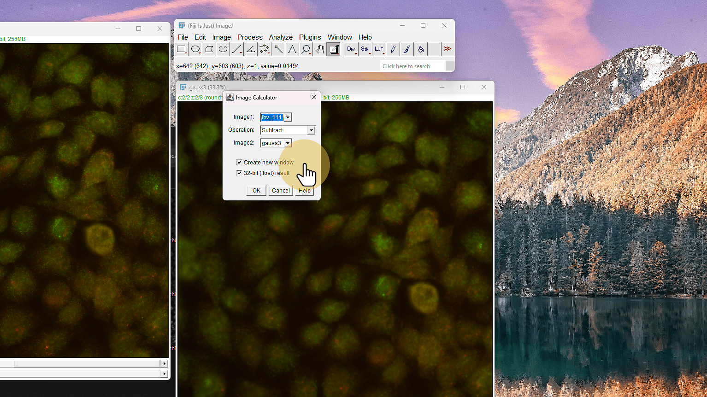
Resta el blur a la original
ℹ️ Manten output de 32 bits
14. Click “OK”
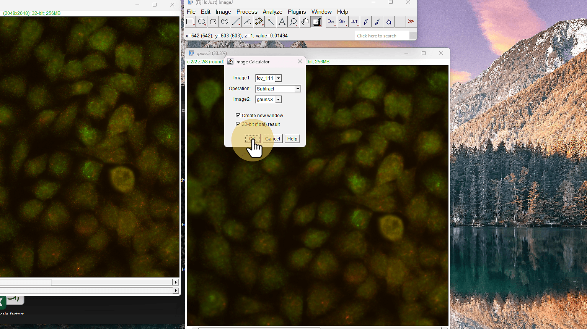
Click “OK”
15.Image - Adjust Brightness & Contrast
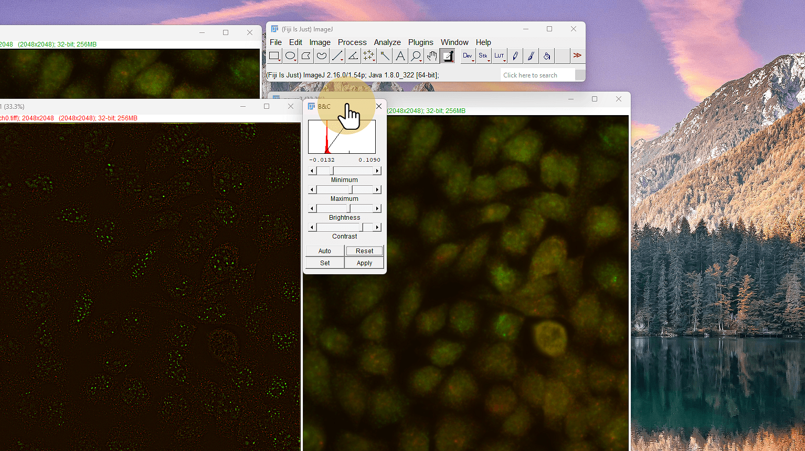
“B&C”
ℹ️ (Shift + C) No cambia nuestros datos, sólo el mapeo a nuestra pantalla para poder verlo.
Paso 2: Deconvolución
Cuestión inherente a la microscopía óptica. Una fuente de luz puntual se difumina por la difracción a un punto más ancho. La Point Spread Function, PSF. La deconvolución sirve para revertir esto.
O Unsharp Mask como aprox: Process → Filters → Unsharp Mask (σ=2, weight=0.6)
1. Unsharp mask
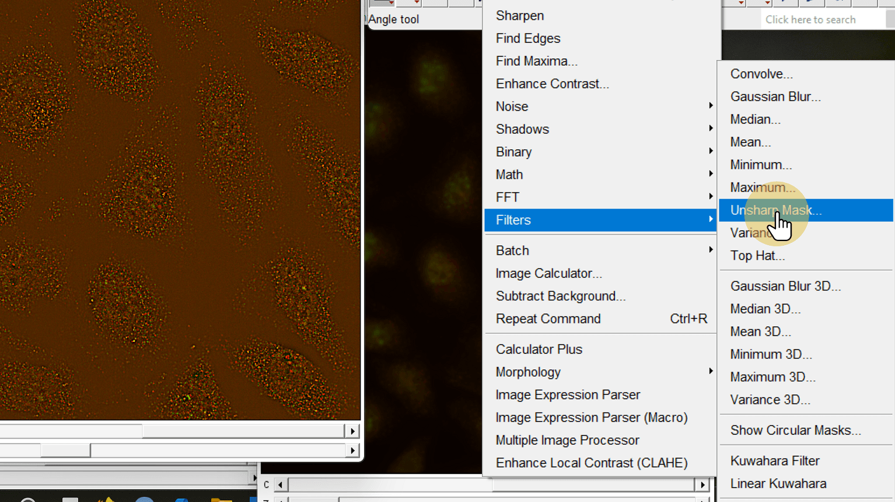
Unsharp mask
2. sigma 2 pixeles
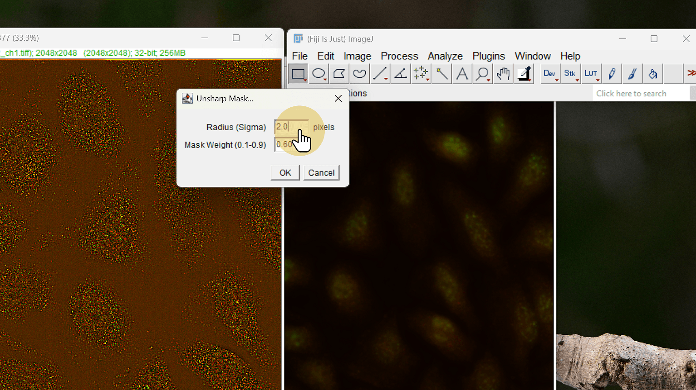
sigma 2 pixeles
3. Renombra la imagen a algo informativo
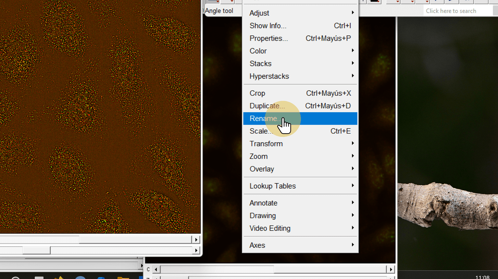
Para no perdernos
4. Aqui “Unsharped fov_377”
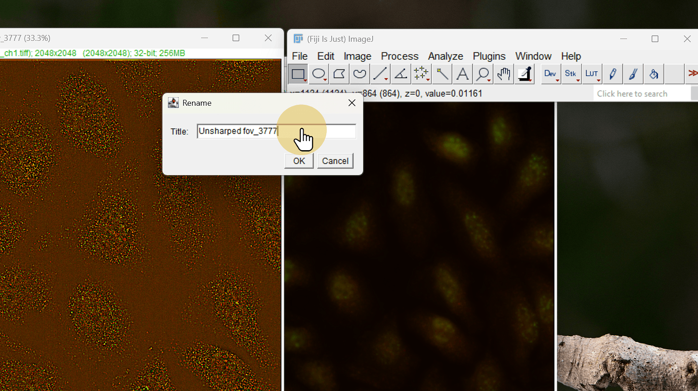
Ejemplo
Paso 3: Filtro gaussiano (low-pass)
Pequeño desenfoque (σ=1) para suavizar el ruido a nivel pixel.
. . .
En FIJI:
Process → Filters → Gaussian Blur → σ = 1
. . .
Luego de estos tres pasos, tenemos un hyperstack limpio listo para la de-codificación.
Save as:merfish_preprocessed_fov_NNN.tif
Cargando los datos en R
Acá es muy importante modificar fov al tuyo
library(EBImage)library(tidyverse)fov_num <-457# change to your FOV number#No worries, esta lìnea le pone el leading zerofov_dir <-sprintf("fov_%03d", fov_num)# Load preprocessed hyperstack (8 rounds x 2 channels = 16 frames)img <-readImage(paste0("merfish_processed_", fov_dir, ".tif"))cat("Image dimensions:", dim(img), "\n")
Image dimensions: 2048 2048 16
cat("Frames: 8 rounds x 2 channels = 16\n")
Frames: 8 rounds x 2 channels = 16
# Frame ordering: channel-firstframe_map <-expand.grid(ch =0:1, r =0:7)
Los datos en matriz
Código para graficar las imágenes
par(mfrow =c(2, 4), mar =c(1, 1, 2, 1))for (i inseq(2,16, by =2)) { frame <- img[,,i]# Clip to 99.5th percentile to handle bright outliers upper <-quantile(frame, 0.995) frame[frame > upper] <- upper frame[frame <0 ] <-0# Rescale 0-1 frame <- frame / (max(frame) -min(frame))display(normalize(frame), method ="raster")#image(frame, col = grey.colors(256),# main = paste0("Round ", frame_map$r[i], " Ch ", frame_map$ch[i]),# axes = FALSE)}
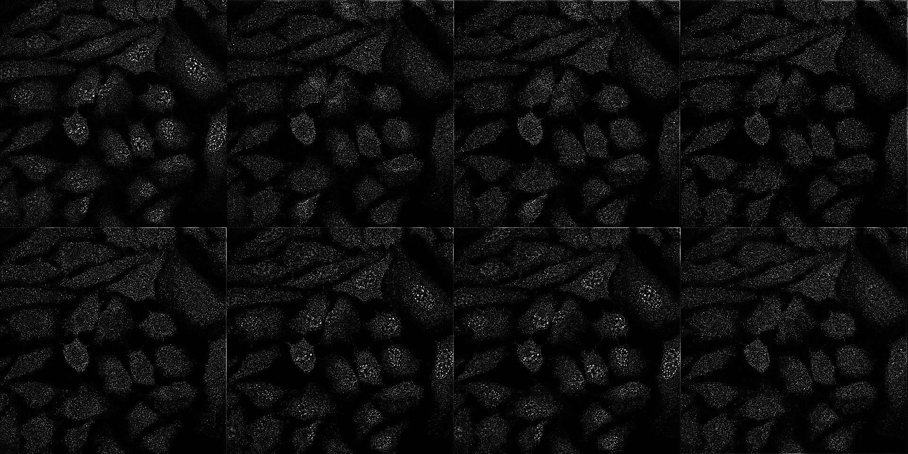
Cada punto es un cluster de sondas fluorescentes unida a una molécula de RNA. En cada ronda y canal, differentes genes se detectan dependiendo de su código.
El codebook es la correspondencia de barcodes a genes
codebook <-read.csv("codebook.csv", row.names =1)# Show first 6 genesslice_sample(codebook, n =5) %>% knitr::kable(caption ="Cada fila un gene, cada columna 1 bit ronda/canal. 1 = fluorescente")
Cada fila un gene, cada columna 1 bit ronda/canal. 1 = fluorescente
r0_c0
r0_c1
r1_c0
r1_c1
r2_c0
r2_c1
r3_c0
r3_c1
r4_c0
r4_c1
r5_c0
r5_c1
r6_c0
r6_c1
r7_c0
r7_c1
Blank-7
0
1
1
0
1
0
0
0
0
0
0
0
0
0
0
1
UMPS
0
1
1
0
0
0
0
0
0
1
0
0
1
0
0
0
SCUBE3
0
0
0
1
1
0
1
1
0
0
0
0
0
0
0
0
KIF13B
0
0
0
0
0
1
0
0
0
1
0
1
0
1
0
0
PTPN14
0
1
0
1
0
0
1
0
1
0
0
0
0
0
0
0
. . .
Cada gen tiene un patrón único de 0s y 1s
Decodificación es mapear la señal observada de cada pixel al código más cercano.
Normalización por factor de escala
Cada bit (ronda/canal) tiene diferente fluorescencia. Hace falta normalizar.
#Ajust el path de acuerdo a donde guardaste los archivossf <-read.csv(file.path(fov_dir, "scale_factors.csv"))# Show the variationggplot(sf, aes(x =factor(r), y = scale_factor, fill =factor(c))) +geom_col(position ="dodge") +labs(x ="Ronda", y ="Factor de escala", fill ="Canal",title ="La intensidad de fluorescencia varía entre canales y rondas") +theme_minimal()
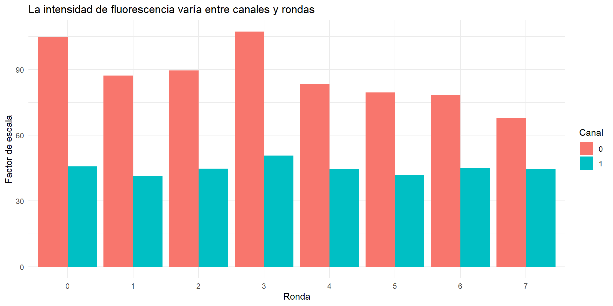
Aplicando los factores de escala
img_norm <- imgfor (i in1:16) { r <- frame_map$r[i] ch <- frame_map$ch[i] scale_val <- sf$scale_factor[sf$r == r & sf$c == ch] img_norm[,,i] <- img[,,i] / scale_valcat(sprintf("Frame %2d (r=%d, c=%d) / %.3f\n", i, r, ch, scale_val))}
Cada pixel tiene asignada un gen de acuerdo a su patrón de intensidad a lo largo de 16 rondas de microscopía (Arcoiris con 140 colores, difícil distinguir)
Validación comparando con un benchmark
Código benchmark
# Published benchmark resultsbench <-read.csv("https://d2nhj9g34unfro.cloudfront.net/MERFISH/benchmark_results.csv",colClasses =c("barcode"="character"))bench_counts <- bench %>%group_by(gene) %>%summarise(benchmark =n())# Our decoded countsdecoded_vector <-as.vector(decoded_full)decoded_genes <- gene_names[decoded_vector[!is.na(decoded_vector)]]our_counts <-data.frame(gene = decoded_genes) %>%group_by(gene) %>%summarise(ours =n())# Comparecomparison <-inner_join(bench_counts, our_counts, by ="gene")r_val <-cor(comparison$benchmark, comparison$ours)ggplot(comparison, aes(x = benchmark, y = ours)) +geom_point(size =2, alpha =0.6, color ="#00BFC4") +geom_abline(slope =1, intercept =0, linetype ="dashed", color ="white") +scale_x_log10() +scale_y_log10() +labs(x ="Gene copy number (published benchmark)",y ="Gene copy number (our R pipeline)",title =paste0("Correlation: r = ", round(r_val, 3))) +theme_minimal() +theme(plot.background =element_rect(fill ="grey20"),panel.background =element_rect(fill ="grey20"),text =element_text(color ="white"),axis.text =element_text(color ="grey80"))
decoded_full — matriz 2048×2048 de índices de genes (de la decodificación en R)
Las hice con Cellpose - fov_NNN/cell_masks.tif — máscaras de Cellpose - fov_NNN/expanded_masks.tif — expansión Voronoi máximo 50 pixeles
Objetivo: combinar genes decodificados, asignarlo a células y crear un objeto espacial de Seurat
Preparando datos para objeto Seurat
library(Seurat)library(dplyr)library(tiff)library(Matrix)library(ggplot2)# 1. Nuclei image. nuclei <-readTIFF(file.path(fov_dir, "nuclei_DAPI.tiff"))#Readtiff transpone las imágenes respecto a ebiimage nuclei <-t(nuclei)# 2. Cell masks (Voronoi-expanded from Cellpose)expanded_masks <-readTIFF(file.path(fov_dir, "expanded_masks.tif"), as.is =TRUE)#Physicists vs engineersexpanded_masks <-t(expanded_masks)# 3. Nuclei-only masks (for comparison)cell_masks <-readTIFF(file.path(fov_dir, "cell_masks.tif"), as.is =TRUE)cell_masks <-t(cell_masks)# 4. Your decoded image (from the decoding pipeline)# decoded_full and gene_names should be in your environmentcat(sprintf("Nuclei image: %s\n", paste(dim(nuclei), collapse ="x")))
# Each pixel that has BOTH a decoded gene AND falls inside a cell mask# gets counted for that cellhas_gene <-!is.na(decoded_full)has_cell <- expanded_masks >0valid <- has_gene & has_cellgene_vec <- gene_names[decoded_full[valid]]cell_vec <- expanded_masks[valid]transcript_table <-data.frame(cell = cell_vec,gene = gene_vec,stringsAsFactors =FALSE)cat(sprintf("Total decoded pixels: %d\n", sum(has_gene)))
An object of class Seurat
140 features across 33 samples within 1 assay
Active assay: MERFISH (140 features, 0 variable features)
1 layer present: counts
1 spatial field of view present: fov_457
La expansión Voronoi es geométrica, no biológica. Muchos transcritos citoplasmáticos quedan sin asignar. ¿Se puede mejorar?
Opción avanzada: Proseg
Proseg usa un modelo probabilístico (Cellular Potts) que inicializa con los núcleos y expande las células hasta explicar la distribución espacial de transcritos utilizando Cellular Potts Model.
Para una aplicación de CPM en mecanobiología de la regeneración, chequen este artículo reciente en Journal of Theoretical Biology
Exportar transcritos para Proseg
# Export decoded transcripts as a point cloudcoords <-which(!is.na(decoded_full), arr.ind =TRUE)transcripts_df <-data.frame(x = coords[, 1],y = coords[, 2],gene = gene_names[decoded_full[coords]],cell_id = expanded_masks[coords] # 0 = not in any nucleus)# Remove BLANKs if you wanttranscripts_df <- transcripts_df[!grepl("BLANK", transcripts_df$gene), ]transcripts_df$z <-0cat(sprintf("Exporting %d transcripts for %d genes\n",nrow(transcripts_df), length(unique(transcripts_df$gene))))write.csv(transcripts_df, file.path(fov_dir, "transcripts_for_proseg.csv"), row.names =FALSE)
An object of class Seurat
140 features across 33 samples within 1 assay
Active assay: MERFISH (140 features, 0 variable features)
1 layer present: counts
1 spatial field of view present: fov_457
Elegir tu objeto y continuar
# Si tienes Proseg:seurat_obj <- seurat_prosegcell_meta <- cell_meta_proseg# Si no tienes Proseg:# seurat_obj <- seurat_voronoi# cell_meta ya está definido de antes
. . .
A partir de aquí, el pipeline es idéntico independientemente de cómo se hizo la segmentación.
Modularity Optimizer version 1.3.0 by Ludo Waltman and Nees Jan van Eck
Number of nodes: 33
Number of edges: 528
Running Louvain algorithm...
Maximum modularity in 10 random starts: 0.0105
Number of communities: 2
Elapsed time: 0 seconds
UMAP y mapa espacial
Visualización UMAP + espacial
library(patchwork)p1 <-DimPlot(seurat_obj, reduction ="umap", label =TRUE, pt.size =5) +ggtitle("UMAP — clusters") +theme_minimal()p2 <-ggplot(data.frame(x = cell_meta$centroid_x,y = cell_meta$centroid_y,cluster = seurat_obj$seurat_clusters),aes(x = x, y = y, color = cluster)) +geom_point(size =5) +coord_equal() +labs(title ="Clusters en el tejido") +theme_minimal() +theme(panel.background =element_rect(fill ="black"))p1 + p2